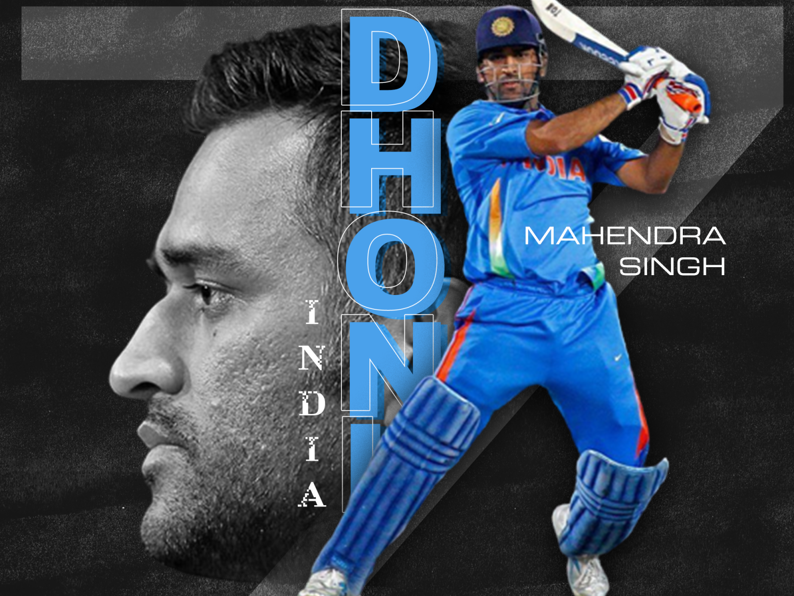

The sport of CRICKET has a known history beginning in the late 16th century and originated in SOUTH EAST ENGLAND and it has been globally in the 19th and 20th centuries.The BRITISH brought cricket to INDIA in the early 1700s,with the first cricket match played in 1721.The first cricket club established by indians is ORIENTAL CRICKET CLUB by the PARIS COMMUNITY in Mumbai in 1848

MAHENDRA SINGH DHONI was born on july 07,1981 in Ranchi,Jarkhand. He plays as a wicket keeper,batsman and he also did captaincy.He started his carrier of playing cricket from 1995.MS DHONI is a right handed batsman and right arm medium batting style.He recieved India's highest sport award,the MAJOR DHYANCHAND KHEL RATNA AWARD in 2008.He was awarded with PADMA SHRI in 2009 and PADMA BHUSHAN in 2018.In the carrier of IPL,being captain for the CHENNAI SUPER KINGS team won the trophy for 4 times
GAUTAM GAMBHIR is a left handed batsman and he is top order batsman.He is INDIA'S one of the most complete batters in the game between 2008 and 2011 world cup.He was born on october 14,1981 in Delhi.His bowling is legbreak type. He started playing cricket from 1999 and he scored over 10,000 runs in international cricket.In his he chased about 20 centuries.He is also an indian politician,philanthriphist.He is current member of the LOK SABHA since 2019.